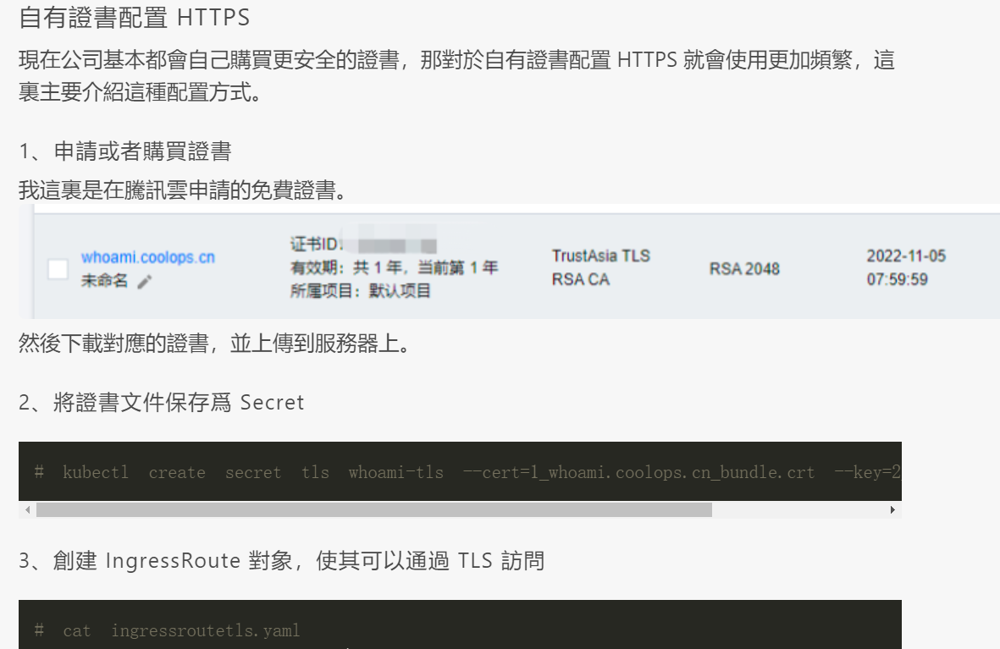

Traefik
With K8S + CRD (Custom Resource Definitions)
-
IngressRoute Definition
# Install Traefik Resource Definitions: kubectl apply -f https://raw.githubusercontent.com/traefik/traefik/v2.10/docs/content/reference/dynamic-configuration/kubernetes-crd-definition-v1.yml # Install RBAC for Traefik: kubectl apply -f https://raw.githubusercontent.com/traefik/traefik/v2.10/docs/content/reference/dynamic-configuration/kubernetes-crd-rbac.yml -
Services
kubectl apply -f https://raw.githubusercontent.com/traefik/traefik/v2.10/docs/content/user-guides/crd-acme/02-services.yml -
修改 traefik
apiVersion: v1 kind: Service metadata: name: traefik spec: type: LoadBalancer # 多加這一行，暴露街口 ports: - protocol: TCP name: web # web 入口 port: 8000 - protocol: TCP name: admin # dashboard 入口 port: 8080 - protocol: TCP name: websecure # web https 入口 port: 4443 selector: app: traefik- Deploymentskubectl apply -f https://raw.githubusercontent.com/traefik/traefik/v2.10/docs/content/user-guides/crd-acme/03-deployments.yml -
Traefik Routers ``` apiVersion: traefik.io/v1alpha1 kind: IngressRoute metadata: name: simpleingressroute namespace: default spec: entryPoints: - web routes:
- match: Host(
192.168.0.17) && PathPrefix(/notls) kind: Rule services:- name: whoami port: 80 ```
apiVersion: traefik.io/v1alpha1 kind: IngressRoute metadata: name: docker-demo namespace: default spec: entryPoints: - web routes: - match: PathPrefix(`/docker-demo`) kind: Rule services: - name: myapp port: 80 - match: Host(
-
Dashboard
http://192.168.0.23:8080/dashboard/#/
- 測試 URL： http://192.168.0.23:8000/notls

-
Middlewares
-
概念

- 修改 IngressRoute
apiVersion: traefik.io/v1alpha1 kind: IngressRoute metadata: name: simpleingressroute namespace: default spec: entryPoints: - web routes: - match: Host(`192.168.0.23`) && PathPrefix(`/notls`) kind: Rule middlewares: - name: test-auth services: - name: whoami port: 80 -
建立 Middleware ``` apiVersion: traefik.io/v1alpha1 kind: Middleware metadata: name: test-auth spec: basicAuth: secret: authsecret
Note: in a kubernetes secret the string (e.g. generated by htpasswd) must be base64-encoded first.
To create an encoded user:password pair, the following command can be used:
htpasswd -nb user password | openssl base64
apiVersion: v1 kind: Secret metadata: name: authsecret namespace: default data: users: dXNlcjokYXByMSRicC5FV295eCRXTWttUktBLzdjQWcycXNIL09XbXIxCgo=
```
htpasswd -nb user password | openssl base64
去看 Traefik Dashboard，會看到多一個 Middlewares

打開瀏覽器，輸入 http://192.168.0.23:8000/notls
輸入：user/password 後，就可以登入成功，並取得資訊

Middleware - Error
建立一個 Service
apiVersion: v1
kind: Service
metadata:
name: traefikerror
spec:
type: LoadBalancer
ports:
- name: http
targetPort: 80
port: 80
selector:
app: traefikerror
---
apiVersion: apps/v1
kind: Deployment
metadata:
name: traefikerror
spec:
replicas: 1
selector:
matchLabels:
app: traefikerror
template:
metadata:
labels:
app: traefikerror
spec:
containers:
- name: traefikerror
image: guillaumebriday/traefik-custom-error-pages
ports:
- containerPort: 80
建立 Middleware
apiVersion: traefik.io/v1alpha1
kind: Middleware
metadata:
name: test-errors
spec:
errors:
status:
- "400-599"
query: /{status}.html
service:
name: traefikerror
port: 80
加入 Middleware
apiVersion: traefik.io/v1alpha1
kind: IngressRoute
metadata:
name: simpleingressroute
namespace: default
spec:
entryPoints:
- web
routes:
- match: Host(`192.168.0.23`) && PathPrefix(`/notls`)
kind: Rule
middlewares:
- name: test-auth
- name: test-errors
services:
- name: whoami
port: 80
暴露 HTTPS 服務
先把 STAR_mic.com.tw.crt 和 STAR_mic.com.tw.key 兩個檔案放到執行目錄下

執行指令
kubectl create secret tls mic-tls --cert=STAR_mic.com.tw.crt --key=STAR_mic.com.tw.key


在 IngressRoute 中加入
apiVersion: traefik.io/v1alpha1
kind: IngressRoute
metadata:
name: ingressroutetls
namespace: default
spec:
entryPoints:
- websecure
routes:
- kind: Rule
match: Host(`localhost.mic.com.tw`) && PathPrefix(`/tls`)
services:
- name: whoami
port: 80
tls:
secretName: mic-tls
ps: 在本機的hosts檔俺中加入 192.168.0.23 localhost.mic.com.tw (192.168.0.2 是存取 Traefik 的暴露IP)
https://localhost.mic.com.tw/tls

參考網頁：https://www.readfog.com/a/1665375657830486016
